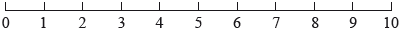
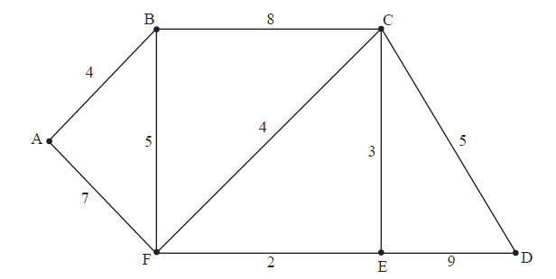

SL Paper 2
The sequence \(\{ {u_n}\} \) satisfies the second-degree recurrence relation
\[{u_{n + 2}} = {u_{n + 1}} + 6{u_n},{\text{ }}n \in {\mathbb{Z}^ + }.\]
Another sequence \(\{ {v_n}\} \) is such that
\[{v_n} = {u_{2n}},{\text{ }}n \in {\mathbb{Z}^ + }.\]
Write down the auxiliary equation.
Given that \({u_1} = 12,{\text{ }}{u_2} = 6\), show that
\[{u_n} = 2 \times {3^n} - 3 \times {( - 2)^n}.\]
Determine the value of \(\mathop {\lim }\limits_{n \to \infty } \frac{{{u_n} + {u_{n - 1}}}}{{{u_n} - {u_{n - 1}}}}\).
Determine the second-degree recurrence relation satisfied by \(\{ {v_n}\} \).
In 1985 , the deer population in a national park was \(330\). A year later it had increased to \(420\). To model these data the year 1985 was designated as year zero. The increase in deer population from year \(n - 1\) to year \(n\) is three times the increase from year \(n - 2\) to year \(n - 1\). The deer population in year \(n\) is denoted by \({x_n}\).
Show that for \(n \geqslant 2,{\text{ }}{x_n} = 4{x_{n - 1}} - 3{x_{n - 2}}\).
Solve the recurrence relation.
Show using proof by strong induction that the solution is correct.
Use Kruskal’s algorithm to find a minimum spanning tree for the weighted graph shown below. State the weight of the tree.

For the travelling salesman problem defined by this graph, find
(i) an upper bound;
(ii) a lower bound.
Given that the integers \(m\) and \(n\) are such that \(3|({m^2} + {n^2})\) , prove that \(3|m\) and \(3|n\) .
Hence show that \(\sqrt 2 \) is irrational.
(a) Consider the recurrence relation \(a{u_{n + 1}} + b{u_n} + c{u_{n - 1}} = 0\).
Show that \({u_n} = A{\lambda ^n} + B{\mu ^n}\) satisfies this relation where \(A\), \(B\) are arbitrary constants and \(\lambda \), \(\mu \) are the roots of the equation \(a{x^2} + bx + c = 0\).
(b)

A particle \(P\) executes a random walk on the line above such that when it is at point \(n\left( {1 \leqslant n \leqslant 9,{\text{ }}n \in {\mathbb{Z}^ + }} \right)\) it has a probability \(0.4\) of moving to \(n + 1\) and a probability \(0.6\) of moving to \(n - 1\). The walk terminates as soon as \(P\) reaches either \(0\) or \(10\). Let \({p_n}\) denote the probability that the walk terminates at \(0\) starting from \(n\).
(i) Show that \(2{p_{n + 1}} - 5{p_n} + 3{p_{n - 1}} = 0\).
(ii) By solving this recurrence relation subject to the boundary conditions \({p_0} = 1\), \({p_{10}} = 0\) show that \({p_n} = \frac{{{{1.5}^{10}} - {{1.5}^n}}}{{{{1.5}^{10}} - 1}}\).
The vertices and weights of the graph \(G\) are given in the following table.

(a) (i) Use Kruskal’s algorithm to find the minimum spanning tree for \(G\), indicating clearly the order in which the edges are included.
(ii) Draw the minimum spanning tree for \(G\).
(b) Consider the travelling salesman problem for \(G\).
(i) An upper bound for the problem can be found by doubling the weight of the minimum spanning tree. Use this method to find an upper bound.
(ii) Starting at \({\text{A}}\), use the nearest neighbour algorithm to find another upper bound.
(iii) By first removing \({\text{A}}\), use the deleted vertex algorithm to find a lower bound for the problem.
(c) The travelling salesman problem is now modified so that starting at \({\text{A}}\), the vertices \({\text{B}}\) and \({\text{C}}\) have to be visited first in that order, then \({\text{D}}\), \({\text{E}}\), \({\text{F}}\) in any order before returning to \({\text{A}}\).
(i) Solve this modified problem.
(ii) Comment whether or not your answer has any effect on the upper bound to the problem considered in (b).
The sequence \(\{ {u_n}:n \in {\mathbb{Z}^ + }\} \) satisfies the recurrence relation \(2{u_{n + 2}} - 3{u_{n + 1}} + {u_n} = 0\), where \({u_1} = 1,{\text{ }}{u_2} = 2\).
The sequence \(\{ {w_n}:n \in \mathbb{N}\} \) satisfies the recurrence relation \({w_{n + 2}} - 2{w_{n + 1}} + 4{w_n} = 0\), where \({w_0} = 0,{\text{ }}{w_1} = 2\).
(i) Find an expression for \({u_n}\) in terms of \(n\).
(ii) Show that the sequence converges, stating the limiting value.
The sequence \(\{ {v_n}:n \in {\mathbb{Z}^ + }\} \) satisfies the recurrence relation \(2{v_{n + 2}} - 3{v_{n + 1}} + {v_n} = 1\), where \({v_1} = 1,{\text{ }}{v_2} = 2\).
Without solving the recurrence relation prove that the sequence diverges.
(i) Find an expression for \({w_n}\) in terms of \(n\).
(ii) Show that \({w_{3n}} = 0\) for all \(n \in \mathbb{N}\).
A canal system divides a city into six land masses connected by fifteen bridges, as shown in the diagram below.

Draw a planar graph to represent this map.
Write down the adjacency matrix of the graph.
List the degrees of each of the vertices.
State with reasons whether or not this graph has
(i) an Eulerian circuit;
(ii) an Eulerian trail.
Find the number of walks of length \(4\) from E to F.
A group of people: Andrew, Betty, Chloe, David, Edward, Frank and Grace, has certain mutual friendships:
Andrew is friendly with Betty, Chloe, David and Edward;
Frank is friendly with Betty and Grace;
David, Chloe and Edward are friendly with one another.
(i) Draw the planar graph \(H\) that represents these mutual friendships.
(ii) State how many faces this graph has.
Determine, giving reasons, whether \(H\) has
(i) a Hamiltonian path;
(ii) a Hamiltonian cycle;
(iii) an Eulerian circuit;
(iv) an Eulerian trail.
Verify Euler’s formula for \(H\) .
State, giving a reason, whether or not \(H\) is bipartite.
Write down the adjacency matrix for \(H\) .
David wishes to send a message to Grace, in a sealed envelope, through mutual friends.
In how many different ways can this be achieved if the envelope is passed seven times and Grace only receives it once?
The graph \(G\) has the following cost adjacency matrix.
Draw \(G\) in planar form.
Given that \(ax \equiv b(\bmod p)\) where \(a,b,p,x \in {\mathbb{Z}^ + }\) , \(p\) is prime and \(a\) is not a multiple of \(p\), use Fermat’s little theorem to show that
\(x \equiv {a^{p - 2}}b(\bmod p)\) .
Hence solve the simultaneous linear congruences\[3x \equiv 4(\bmod 5)\]\[5x \equiv 6(\bmod 7)\]giving your answer in the form \(x \equiv c(\bmod d)\) .

The diagram above shows the graph \(G\).
(i) Explain briefly why \(G\) has no Eulerian circuit.
(ii) Determine whether or not \(G\) is bipartite.
(iii) Write down the adjacency matrix of G. Hence find the number of walks of length \(4\) beginning at A and ending at C.
The cost adjacency matrix of a graph with vertices P, Q, R, S, T, U is given by

Use Dijkstra’s Algorithm to find the length of the shortest path between the vertices P and S. Show all the steps used by the algorithm and list the order of the vertices in the path.
Given the linear congruence \(ax \equiv b({\rm{mod}}p)\) , where \(a\) , \(b \in \mathbb{Z} \) , \(p\) is a prime and \({\rm{gcd}}(a,p) = 1\) , show that \(x \equiv {a^{p - 2}}b({\rm{mod}}p)\) .
(i) Solve \(17x \equiv 14(\bmod 21)\) .
(ii) Use the solution found in part (i) to find the general solution to the Diophantine equation \(17x + 21y = 14\) .
The following diagram shows a weighted graph \(G\) .

(i) Explain briefly what features of the graph enable you to state that \(G\) has an Eulerian trail but does not have an Eulerian circuit.
(ii) Write down an Eulerian trail in \(G\) .
(i) Use Kruskal’s algorithm to find and draw the minimum spanning tree for \(G\) . Your solution should indicate the order in which the edges are added.
(ii) State the weight of the minimum spanning tree.
Use Dijkstra’s algorithm to find the path of minimum total weight joining A to D, and state its weight. Your solution should indicate clearly the use of this algorithm.
The graph \(H\) has the following adjacency matrix.

(i) Show that \(H\) is bipartite.
(ii) Draw \(H\) as a planar graph.
(i) Explain what feature of \(H\) guarantees that it has an Eulerian circuit.
(ii) Write down an Eulerian circuit in \(H\) .
(i) Find the number of different walks of length five joining A to B.
(ii) Determine how many of these walks go through vertex F after passing along two edges.
Find the maximum number of extra edges that can be added to \(H\) while keeping it simple, planar and bipartite.
Find the smallest positive integer \(m\) such that \({3^m} \equiv 1(\bmod 22)\) .
Given that \({3^{49}} \equiv n(\bmod 22)\) where \(0 \le n \le 21\) , find the value of \(n\) .
Solve the equation \({3^x} \equiv 5(\bmod 22)\) .

The diagram shows the graph \(G\) with the weights of the edges marked.
State what features of the graph enable you to state that \(G\) contains an Eulerian trail but no Eulerian circuit.
Write down an Eulerian trail.
Use Dijkstra’s algorithm to find the path of minimum total weight joining A to D, stating this total weight. Your solution should show clearly that this algorithm has been used.
Consider the following weighted graph.

Determine whether or not the graph is Eulerian.
Determine whether or not the graph is Hamiltonian.
Use Kruskal’s algorithm to find a minimum weight spanning tree and state its weight.
Deduce an upper bound for the total weight of a closed walk of minimum weight which visits every vertex.
Explain how the result in part (b) can be used to find a different upper bound and state its value.
A connected planar graph has \(e\) edges, \(f\) faces and \(v\) vertices. Prove Euler’s relation, that is \(v + f = e + 2\) .
(i) A simple connected planar graph with \(v\) vertices, where \(v \ge 3\) , has no circuit of length \(3\). Deduce that \(e \ge 2f\) and therefore that \(e \le 2v - 4\).
(ii) Hence show that \({\kappa _{3,3}}\) is non-planar.
The graph \(P\) has the following adjacency table, defined for vertices A to H, where each element represents the number of edges between the respective vertices.

(i) Show that \(P\) is bipartite.
(ii) Show that the complement of \(P\) is connected but not planar.
While on holiday Pauline visits the local museum. On the ground floor of the museum there are six rooms, A, B, C, D, E and F. The doorways between the rooms are indicated on the following floorplan.
![]()
There are 6 museum s in 6 towns in the area where Pauline is on holiday. The 6 towns and the roads connecting them can be represented by a graph. Each vertex represents a town, each edge represents a road and the weight of each edge is the distance between the towns using that road. The information is shown in the adjacency table.
![]()
Pauline wants to visit each town and needs to start and finish in the same town.
Draw a graph G to represent this floorplan where the rooms are represented by the vertices and an edge represents a door between two rooms.
Explain why the graph G has an Eulerian trail but not an Eulerian circuit.
Explain the consequences of having an Eulerian trail but not an Eulerian circuit, for Pauline’s visit to the ground floor of the museum.
Write down a Hamiltonian cycle for the graph G.
Explain the consequences of having a Hamiltonian cycle for Pauline’s visit to the ground floor of the museum.
Use the nearest-neighbour algorithm to determine a possible route and an upper bound for the length of her route starting in town Z.
By removing Z, use the deleted vertex algorithm to determine a lower bound for the length of her route.